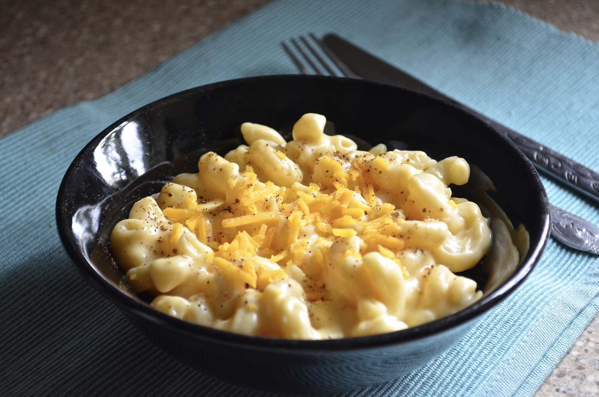

<-- Back to Homepage
Macaroni and Cheese

Description
Quick, easy, and tasty macaroni and cheese dish.
Fancy, designer mac and cheese often costs forty or fifty dollars to prepare when you have so many exotic and expensive cheeses,
but they aren't always the best tasting.
This simple recipe is cheap and tasty.
Ingredients
- 8 ounces uncooked elbow macaroni
- ¼ cup butter
- 2½ tablespoons all-purpose flour
- 3 cups milk
- 2 cups shredded sharp Cheddar cheese
- ½ cup grated Parmesan cheese
- 2 tablespoons butter
- ½ cup bread crumbs
- 1 pinch paprika
Steps
- Preheat the oven to 350 degrees F (175 degrees C).
- Cook macaroni according to the package directions. Drain.
- Melt butter in a medium skillet over low heat.
- Gradually add flour, whisking until well combined.
- Slowly pour in milk, whisking constantly until smooth.
- Stir in cheeses, and cook over low heat until cheese is melted and the sauce is a little thick.
- Put macaroni in large casserole dish, and pour sauce over macaroni. Stir well.
- Melt butter in a skillet over medium heat. Add breadcrumbs and brown.
- Spread over the macaroni and cheese to cover. Sprinkle with a little paprika.
- Bake in the preheated oven for 30 minutes. Serve.
Enjoy your Mac and Cheese!